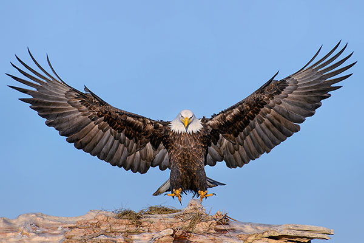

Đại bàng là một loài chim săn mồi cỡ lớn thuộc bộ Ưng, họ Accipitridae.
Chúng sinh sống trên mọi nơi có núi cao và rừng nguyên sinh còn chưa bị
con người chặt phá như bờ biển Úc, Indonesia, Phi châu... nhưng chủ yếu
là Lục địa Á-Âu với khoảng 60 loài, còn lại 11 loài khác tìm thấy tại
các lục địa còn lại bao gồm 2 loài ở Lục địa Bắc Mỹ,[1] 9 loài ở Trung
và Nam Mỹ và 3 loài ở Úc.

Đại bàng có nhiều đặc điểm nhận dạng khác nhau giữa các loài đại bàng
với nhau nhưng nổi bật là màu lông và kích thước từng loài. Loài đại
bàng lớn nhất có chiều dài cơ thể hơn 1 m và nặng 7 kg. Loài bé nhất chỉ
dài có 0,4 m và nặng khoảng hơn 0,5 kg. Chim mái thường lớn hơn chim
trống và nặng hơn chim trống khoảng 25%.
Đại bàng thường làm tổ trên núi hoặc cây cao. Tổ của chúng rất lớn và
mỗi năm chúng lại tha về tổ nhiều cành cây mới để làm cho tổ kiên cố hơn
trước. Tổ là nơi chim cái đẻ trứng. Mỗi kì sinh nở thì chim cái sinh 2
trứng. Do chim bố mẹ chỉ có khả năng nuôi một chim non nên thường sẽ có
cuộc quyết đấu giữa hai chim con. Con nào thắng sẽ được nuôi cho đến khi
trưởng thành.